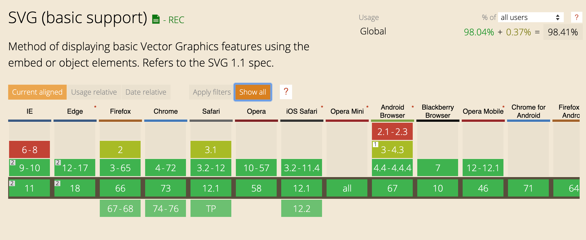
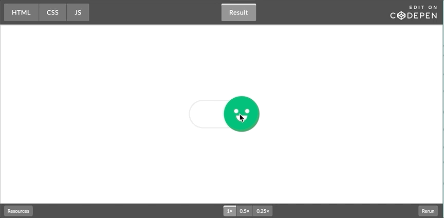
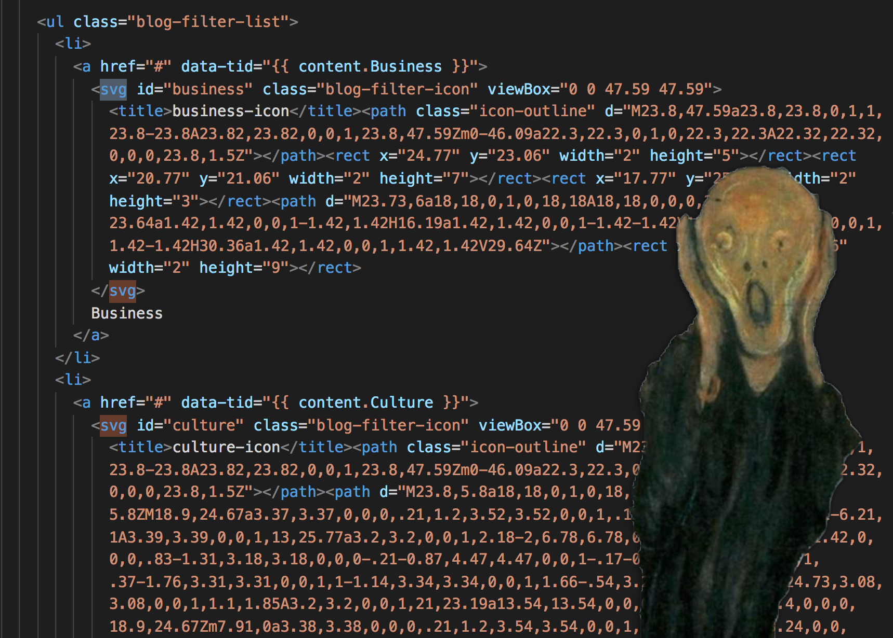
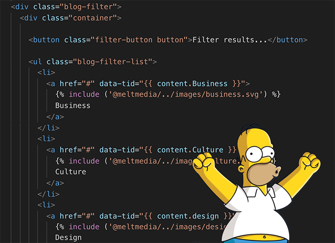
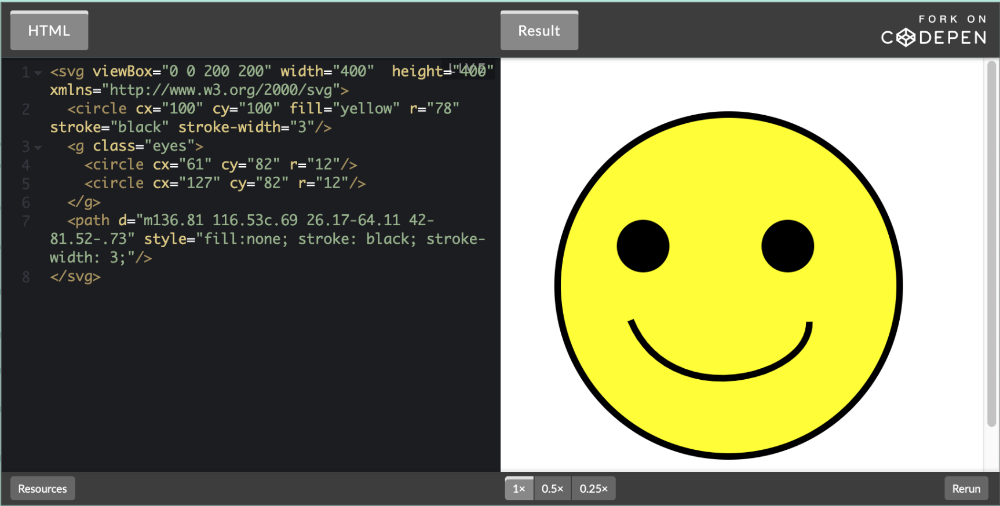
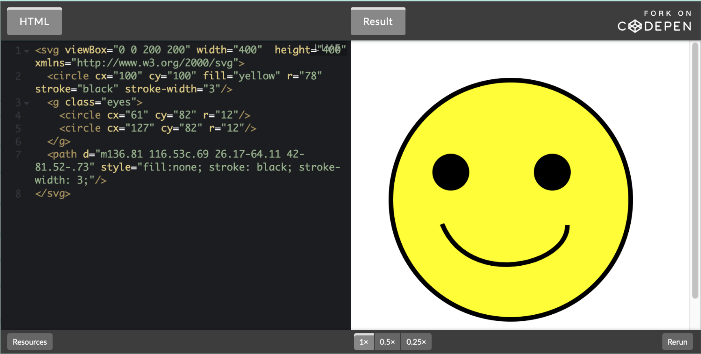
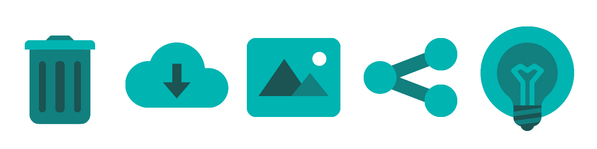
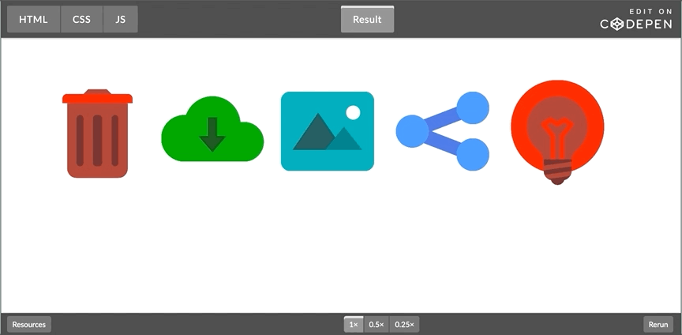
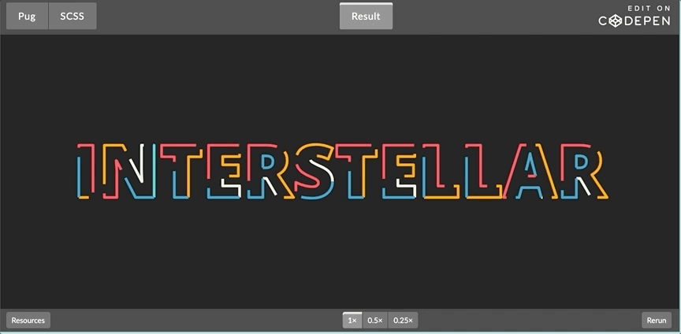

Maybe-crazy
things to do with inline SVG Drupal 8
Audrey Brockhaus
|
FE Developer at meltmedia |
|
CSS, SVG, and doing questionable things in Twig templates |
Differences between SVG and other web image formats
| jpeg, png, gif |
SVG |
|
Raster (resolution dependent)
|
Vector (resolution independent)
|
|
Binary
|
Test-based, XML markup, human readable-ish and human writable-ish
|
|
Elements within the image not selectable in browser
|
Selectable in browser (drawn by browser, can be changed in browser!)
|

SVG can do some wild stuff.
(Happy ↔ Sad) by Chris Gannon

SVG interactive web by Blaz Kemperle

Using SVG: Easy Mode
<img src="picture.svg">
Using SVG: Fun Mode
<ul>
<li>
<a href="/home">
<svg viewBox="0 0 200 200" width="400" height="400"
xmlns="http://www.w3.org/2000/svg">
<circle cx="102" cy="100" fill="#ff0" r="78"
stroke="#000" stroke-width="3"/>
...etc.

Twig Includes
{% include (‘path/to/file/picture.svg’) %}
↑ points to docroot
{% include (‘@theme_name/picture.svg’) %}
↑ points to theme’s templates folder
{% include (‘@theme_name/../images/picture.svg’) %}
↑ points to theme’s images folder

Anatomy of an SVG
 

Animate your inline SVG with CSS
“Propertunities” & “Attribilities”
I’m so sorry
Common SVG Presentation Attributes for Shapes
| Properties |
Values |
Examples |
|
fill
Default: black
|
Color: defined as hex code, rgb, or even as a color keyword like `green`
Pattern or Gradient: Defined in the “defs” region of your SVG
|
fill=”none”
fill=”#eeeeee”
fill=”rgb(0,0,255)”
fill=”peachPuff”
fill=”url(#rainbow)”
|
|
opacity
Default: 1 |
Decimal value between 0 and 1.
Can also separately set “fill-opacity” and “stroke-opacity”
|
opacity="0.6"
|
|
stroke
Default: none
|
Color, Pattern, or Gradient, same as Fill values above
|
stroke=”green”
stroke=”url(#rainbow)”
|
|
stroke-width
Default: 1
|
A number, in viewport units or a % of viewport
|
stroke-width=”5”
stroke-width=”20%”
|
Super-average icons

....not so easy to implement
(icons changed to protect the guilty)
Super-average icons: Potential structure
| Taxonomy term: |
Product category (Example: Camping) |
| |
|
Example values |
| Taxonomy fields: |
Product category color
(using Color Field module)
Trash icon
Download icon
Picture icon
Share icon
Idea icon
|
#008000
trash-green.png
download-green.png
picture-green.png
share-green.png
idea-green.png
|
Using variables in SVG
<path fill="{{ node.field_product_line_color|field_value }}"
d="M256,512C114.842,512,0,397.158,0,256c0-62.431,22.727-
122.565,63.994-169.326c5.504-6.237,15....12z"/>
Example code using Color Field Module and Field Value module
Color-flexible icons

Super-average Icons: Structure with inline SVG
| Taxonomy term: |
Product category (Example: Camping) |
| |
|
Example values |
| Taxonomy fields: |
Product category color
(using Color Field module)
Trash icon
Download icon
Picture icon
Share icon
Idea icon
|
#008000
trash-green.png
download-green.png
picture-green.png
share-green.png
idea-green.png
|
Custom Avatars
SVG Filters
SVG Filters
<filter id="lightenAndSaturate">
<feColorMatrix type="matrix" result="lightened"
values=" 2 0 0 0 0
0 2 0 0 0
0 0 2 0 0
0 0 0 2 0 "/>
<feColorMatrix type="saturate" result="saturated" values="1.3" />
</filter>
filter: url(#lightenAndSaturate);
SVG Text and Raster Images
Text in SVG
<text x="50%" y="50%" font-size="300px" text-anchor="middle">
Here’s some vertically-centered text!</text>
Animated text fill by Cesar C

SVG Text Mask w/ Video Fill by Dudley Storey

Raster Images in SVG
<image xlink:href="logo.png" height="200" width="200"
x="0" y="0" />
Bringing it all together
more is more and less is a bore
Going further
Animating SVG with JavaScript:
Resources & References from this talk:
Handy Modules:
Thank you
Design love from:
Adrienne Hodges & Abby Blue
Support & encouragement from:
meltmedia
Icons from:
icons8.com
Join us tomorrow!
Contribution Opportunities
Friday, April 13, 2018
Mentored
Contribution
|
First Time
Contributor Workshop
|
General
Contribution
|
9:00-18:00
Room: 602
|
9:00-12:00
Room: 606
|
9:00-18:00
Room: 6A
|
What did you think?
Locate this session at the DrupalCon Seattle website:
http://seattle2019.drupal.org/schedule
Take the Survey
https://www.surveymonkey.com/r/DrupalConSeattle